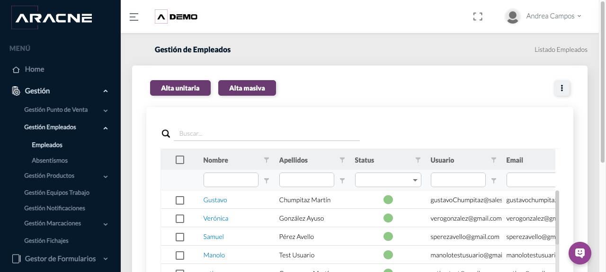
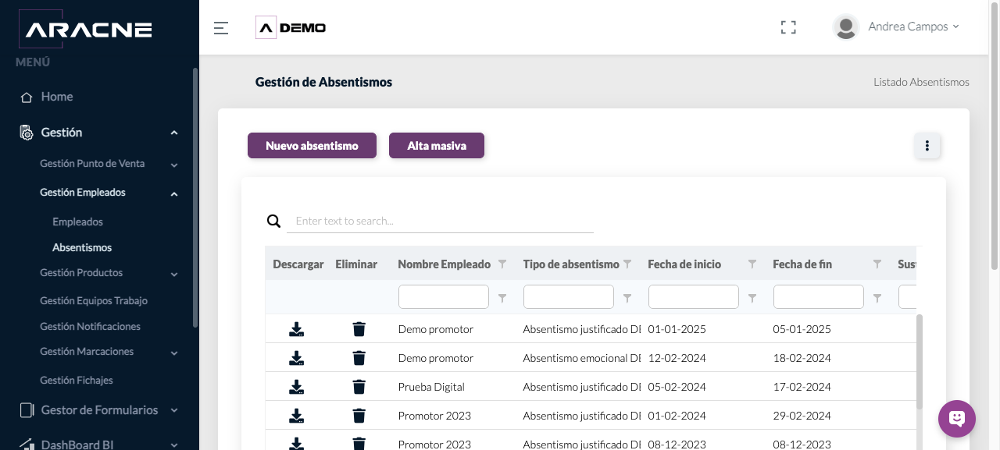

Back Office
Empleados y ausencias
Consultar empleados, su rol y su disponibilidad.
Requisitos
Permiso de gestión de empleados.
Dónde estáGestión › Gestión Empleados
Procedimiento
- En Empleados, filtra por nombre, usuario, estado, rol o superior.

Paso 1. Listado, filtros y acciones de empleados. - Usa Alta unitaria o Alta masiva para incorporar perfiles según el procedimiento interno.
Paso 2. Listado, filtros y acciones de empleados. - Comprueba zona horaria, idioma, rol y superior antes de asignar trabajo.
Paso 3. Listado, filtros y acciones de empleados. - En Ausencias, consulta el tipo y el intervalo de fechas.

Paso 4. Consulta de ausencias, fechas y sustituciones. - Comprueba si existe sustitución y documentación asociada cuando corresponda.
Paso 5. Consulta de ausencias, fechas y sustituciones.
Campos y controles
- Status: disponibilidad del perfil.
- Rol y Superior: acceso y jerarquía operativa.
- Zona horaria e Idioma: presentación y registro temporal.
- Tipo de ausencia, fechas, sustitución y observaciones: contexto de indisponibilidad.
Resultado esperado
El perfil puede asignarse a equipos, PDV y rutas; las ausencias quedan visibles en su listado.
Cómo comprobarlo
Localiza al empleado y verifica estado, rol, superior y fechas relevantes.
Problemas habituales
- Si un empleado no aparece en un selector, comprueba su estado y rol.
- Si las fechas no coinciden, revisa zona horaria y periodo seleccionado.
Vídeos de Empleados
Alta unitaria y masiva de usuarios. Abrir la sección correspondiente de la videoteca.
Operaciones relacionadas
Equipos de trabajoGestión de FichajesAsignación PDV–usuarios